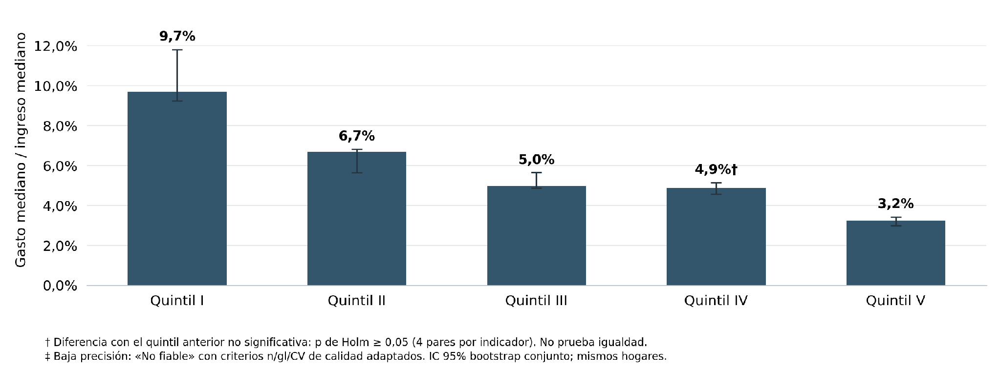
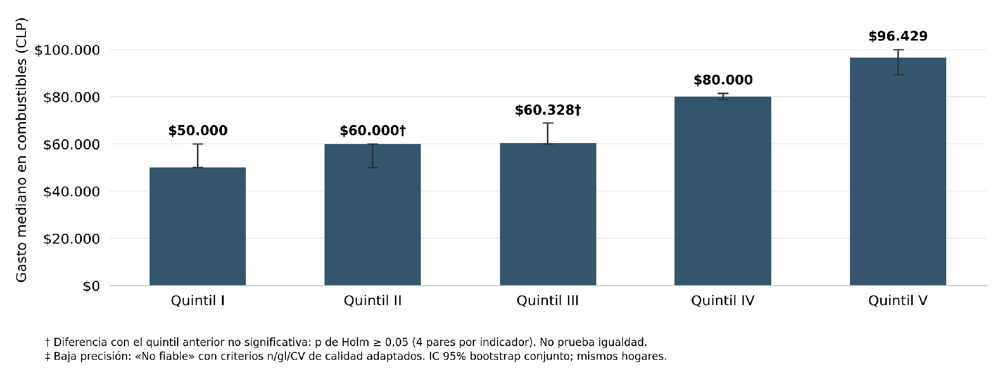
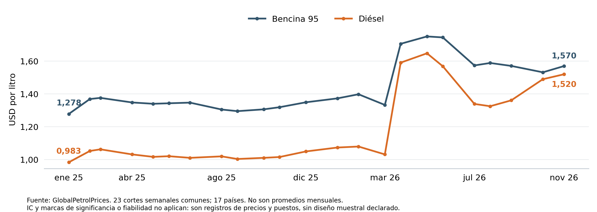
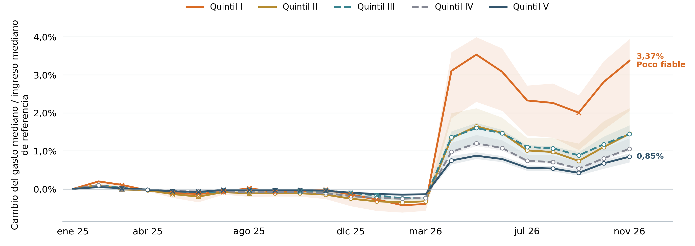
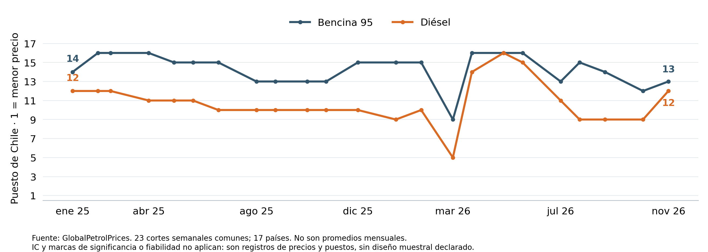
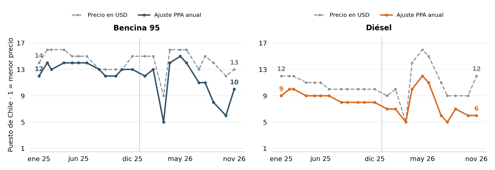

Los hogares de menores ingresos, aquellos que muchas veces habitan nuestros padres, tíos, abuelos o amistades que pasan por momentos de dificultad económica transitoria o permanente, la evidencia nos indica que en términos relativos, gastan 3 veces más en combustibles que aquellos hogares de mayores ingresos. Es así como la última Encuesta de Presupuestos Familiares (2021-2022) nos indica que el quintil de menores ingresos destina el 9,7% (IC 95%: 9,3–11,8%) de sus ingresos en combustibles para movilización, versus un 3,2% (IC: 3,0–3,4%) de los hogares de mayor ingreso.
Gráfico 1: Gasto mediano en gasolina y diésel para transporte personal / ingreso mediano de los mismos hogares gastadores.


IC 95% bootstrap conjunto. † en quintil IV: diferencia con el III no significativa. Fuentes [1, 2, 5–7]; cálculo propio.
Por otro lado, mucho hemos escuchado sobre el precio de los combustibles en Chile en el escenario latinoamericano y para hablar de eso el GlobalPetrolPrices nos entrega información comparable y continua en el tiempo, si a eso le agregamos la transformación a través de Paridad del Poder Adquisitivo, podemos obtener resultados basados en evidencia.
Cuánto representa el gasto mediano frente al ingreso mediano
En el primer quintil la EPF 2021-2022 nos indica que el gasto mediano fue $50.000 y el ingreso mediano $515.290, unos $9,7 de gasto en combustible por cada $100 de ingreso. En contraposición, el quintil de mayores ingresos destinaban a combustibles $96.429 de unos $2.972.907 de ingreso mediano
| Quintil | Gasto* mediano en combustible | Ingreso* mediano | Gasto / ingreso medianos |
|---|---|---|---|
| I | $50.000 | $515.290 | 9,7% |
| II | $60.000 | $897.500 | 6,7% |
| III | $60.328 | $1.212.892 | 5,0% |
| IV | $80.000 | $1.640.194 | 4,9%† |
| V | $96.429 | $2.972.907 | 3,2% |
Pesos mensuales de 2021–2022. Ingreso disponible del hogar sin arriendo imputado. Fuente: cálculo propio.
*: Calculado respecto de hogares que declaran gastos en bencina y/o diesel
†: Los quintiles III y IV tienen indicadores cercanos: 5,0% y 4,9%, su comparación no resulta estadísticamente significativa (p de Holm = 0,746).


Gráfico 2 Gasto mediano que integra el numerador del indicador. IC 95% bootstrap. † en quintil II compara con I; † en III compara con II. Son diferencias no significativas con Holm. El denominador usa exactamente los mismos hogares de cada quintil. Fuentes [1, 2, 5–7]; cálculo propio.
La evolución del precio y del puesto de Chile
Según la información de GlobalPetrolPrices, entre el 27 de enero de 2025 y el 16 de noviembre de 2026, en Chile la bencina de referencia 95 pasó de USD 1,278 a USD 1,570 por litro (22,8%); el diésel, de USD 0,983 a USD 1,520 (54,6%).


Gráfico 3 Precios GPP publicados para Chile en USD/litro. 23 cortes semanales seleccionados, uno por mes; no promedios mensuales. Último corte: 2026-11-16. Sin IC ni marcas de significancia muestral para estos registros de precios. Fuente [4]; cálculo propio.


Gráfico 4 Cambio simulado del gasto mediano / ingreso mediano de los mismos hogares gastadores. Base: enero 2025, con mezcla de gastos e ingresos IX EPF; precios GPP en CLP. IC 95% puntuales, condicionados a precios. ○: p Holm ≥0,05 frente al quintil anterior (4 pares por mes); ×: «No fiable», criterios adaptados. Septiembre de 2026 usa referencias GPP «hace un mes», sin día publicado. No mide gasto actual. Fuentes [1, 2, 4–7].
En noviembre de 2026, Chile ocupa el puesto 13 en bencina 95 y el 12 en diésel, entre 17 países (1 = menor precio).


Gráfico 5 Puesto de Chile (1 = menor precio en USD/litro), en 23 cortes comunes y un universo fijo de 17 países. Sin IC ni pruebas de significancia muestral para estos puestos. Fuente [4]; cálculo propio.
Cómo cambia el ranking al ajustar por PPA
La paridad de poder adquisitivo (PPA) permite expresar valores en una unidad comparable según los niveles de precios de las economías. Para esta segunda lectura se ajustan los mismos precios GPP con factores anuales de PPA del PIB del FMI, edición octubre de 2026. Es una aproximación anual aplicada a 23 cortes de precios.
Bajo ese ajuste, Chile pasa del puesto 12 al 10 en bencina 95 y del 9 al 6 en diésel. El puesto 1 corresponde al precio ajustado más bajo entre los mismos 17 países. Los puestos en USD se muestran en gris para facilitar la comparación.


Gráfico 6 Evolución del ranking de Chile en USD y con ajuste PPA anual del PIB. Los factores son constantes dentro de cada año; la línea vertical identifica su actualización en enero de 2026. 2026 incorpora proyecciones. Sin IC muestrales. Fuentes [4, 8]; cálculo propio.
La PPA utilizada corresponde al PIB, no a una canasta específica de los hogares. El ajuste parte de precios en USD y utiliza la relación anual entre el PIB valorado en PPA y el PIB en USD; no incorpora el tipo de cambio de cada fecha. Por eso los resultados se presentan como aproximaciones y no como una PPA observada mensualmente.
Al mantener los factores de 2025 durante toda la ventana, Chile termina noviembre de 2026 en el puesto 10 en bencina y 6 en diésel. El Excel conserva ambas variantes, los factores originales, sus celdas y las fórmulas. [4, 8]
Este ranking compara precios entre economías. Para comprender cuánto pesa el combustible en los hogares de menores ingresos, la referencia del artículo sigue siendo la relación EPF entre gasto mediano e ingreso mediano de los mismos hogares que declaran gasto.
Cómo leer los intervalos y las marcas
Cada IC del 95% se obtiene de 1.999 réplicas bootstrap. En cada una se recalculan el gasto mediano, el ingreso mediano y su relación sobre el mismo dominio. Se conserva la dependencia entre ambas medianas; no se dividen extremos de intervalos calculados por separado. [5–7]
† significa que la diferencia frente al quintil inmediatamente anterior, para el mismo indicador, tiene p ajustado de Holm ≥0,05. La familia gráfica contiene cuatro comparaciones adyacentes por indicador. La varianza de cada diferencia incorpora su covarianza; el solapamiento de los IC no decide la significancia. El Excel conserva también los diez pares con un ajuste separado. [5, 6]
‡ identifica baja precisión, clasificación «No fiable». Se aplican con assess del paquete calidad los criterios de tamaño muestral, grados de libertad y coeficiente de variación del esquema Chile a los insumos bootstrap. Es una adaptación explícita: calidad no tiene una función nativa para esta relación de medianas. La evaluación no constituye una validación oficial del indicador. [2, 5]
El bootstrap usa pseudo-conglomerados dentro de estratos, semilla 20261119 y los factores finales de la base pública. Es una aproximación con el diseño público: los cortes se mantienen fijos y no se recalibran factores por réplica. Los montos corresponden a 2021–2022. Gasolina y diésel para transporte personal se identifican con CCIF 07.2.2.02.01 y 07.2.2.01.01; se excluyen pasajes y combustibles domésticos. La gasolina EPF no distingue octanajes. [1, 2]
Los Excel respaldan ambas medianas, el indicador, sus IC, covarianzas, pruebas, precios y fuentes de la curva GPP. Los scripts 01–11 incluyen instalación y renv.lock; actualizan y almacenan las fuentes antes de generar los productos. Se reproducen veinte celdas oficiales y el error estándar de ingreso del manual. Actualización de fuentes: 22 de noviembre de 2026; último precio publicado: 16 de noviembre de 2026. [2, 3]
Fuentes y referencias
[1] INE. Microdatos IX EPF 2021–2022, bases Personas, Gastos y CCIF. Variables folio, fe, estrato_muestreo, var_unit, ing_disp_hog_hd y gasto. Sin paginación. Base Personas IX EPF (Formato CSV) Base Gastos IX EPF (Formato CSV) CCIF IX EPF (Formato CSV)
[2] INE (2025). Manual de uso de bases de datos IX EPF, lenguaje R. Cobertura: p. 10; mensualización: pp. 13–14; diseño: pp. 19–21; quintiles: pp. 72–79; calidad: pp. 80–84. Numeración PDF coincidente. Manual oficial
[3] INE. Tabulados principales IX EPF. Controles: CUADROS 4A - 4E, G8:G12 y J8:J12; CUADRO 7B, D715:H716. Sin paginación. Tabulados
[4] GlobalPetrolPrices. Bencina 95 y diésel: 23 cortes internacionales comunes, 2025-01-27–2026-11-16; 17 países y 782 precios. Precios CLP: 23 referencias mensuales publicadas, con fecha y origen en Precios CLP del Excel. Historia: copias públicas archivadas; último corte: páginas vigentes del proveedor. Sin paginación. Gasolina inicial Gasolina final Diésel final Precios nacionales CLP Acceso y cobertura
[5] CRAN. calidad 0.8.2: assess, pp. 2–4; create_mean, pp. 5–6, usado para el control de ingreso. survey, referencia 4.5: bootstrap, pp. 10–15; withReplicates, pp. 160–162. Versiones ejecutadas: calidad 0.8.2 y survey 4.4-2. calidad survey
[6] R Core Team. stats, p.adjust, secciones Details y References: ajuste Holm. Sin paginación. Documentación oficial
[7] R Core Team. stats, quantile, sección Types: tipo 1, sin interpolación. Sin paginación. Documentación oficial
[8] FMI. World Economic Outlook Database, octubre 2026. Hoja Countries: NGDPD y PPPGDP, columnas BW (2025) y BX (2026); celdas y estados originales en Factores PPA del Excel. FAQ, secciones 2 y 4: frecuencia anual y PPA del PIB. Sin paginación. Base WEO Método PPA